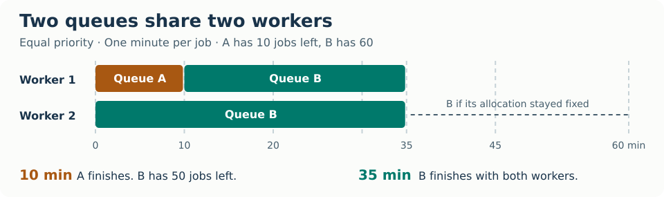

When a queue gives up its workers
Queue A has 10 minutes of work on one worker. Queue B has 60. Move through the run to see when each job finishes and when the second worker becomes available to B.

A has 10 jobs left. B has 60. Each queue has one worker.
At minute 10, B has completed ten jobs. Its remaining 50 jobs take 25 minutes on two workers, so its projected finish is minute 35. The dotted extension shows the 60-minute finish if B kept just one worker.